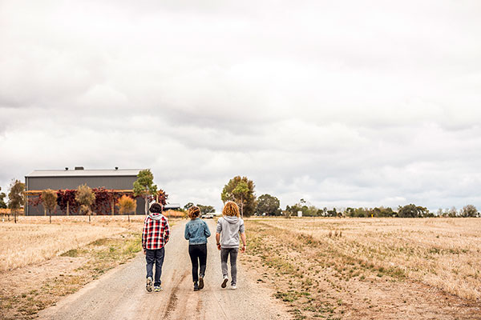

Information on traumatic events – for young people

This information is for young people affected by a natural disaster such as a flood, bushfire, earthquake or cyclone
Everyone needs support after being in or witnessing a traumatic event but everyone is different so the level or type of support they need is different. You will find this information more helpful if you consider what will help and what won't and make a plan for yourself. You can also talk with a trusted adult about getting the right sort of help for yourself if it all feels a bit much.
Natural disasters can be hard to understand as we often think of nature as something beautiful and part of our every day. Natural disasters are inevitable but uncommon and many people who have been through one can have a range of emotions.
Common reactions to a natural disaster
Fear and anxiety
It's common to worry that the disaster - whether a flood, bushfire, earthquake or cyclone - could happen again, or that you are not safe.
Grief and loss
There is no 'right' way to grieve for loved ones who have died or other major losses. It's very personal, it's very individual, and it's very normal to grieve.
Anger and confusion
It can be hard to understand a natural disaster because the damage seems so unfair, and there's usually no-one to blame. This can make you feel frustrated, angry and confused.
Sadness and emptiness
You might be sad about losing family members or friends, and perhaps your home and precious possessions. If you are asked to stay away from your home, or if your friends are still away, or your neighbourhood is badly damaged, the sadness can turn to feelings of emptiness.
Denial
When bad things have happened, some people prefer not to think about them at all. This might be a help to start with, but our feelings can catch us by surprise later on. It's okay to distract yourself, but also find some time to think about what has happenedand how you are going.
Guilt
You might feel guilty after a natural disaster. It might be about something that you did or didn't do at the time, or you might just feel bad about yourself.
Shock
Shock makes you slow down. It can help keep you safe in the first few days after a disaster, and feeling of shock may come and go over a few weeks.
Other emotions
You might start to withdraw from your family and friends, or perhaps start to get irritable with others, as you try to manage your emotions. Some young people use drugs and alcohol to 'switch off', but this probably won't help them cope with the challenges ahead.
Thinking about the event all the time, and having trouble sleeping, are common after a traumatic experience. Your appetite can change as well: some people want to eat more, and others find they don't feel hungry.
 Looking after yourself
Looking after yourself
Eat well and get enough rest
Try to eat three meals a day even if you don't feel very hungry. Get enough rest so that you are able to cope and make decisions.
Reduce drug and alcohol use
Drugs and alcohol can mask your feelings, but sometimes make them stronger so that you are less able to manage.
Exercise regularly
Exercise is a great way to let out some energy if you are feeling anxious, angry or "revved up". It can energise you if you are feeling sad and helpless, and it helps you sleep better.
Have a routine
When everything feels a little "out of control", a regular routine can help you manage things and make life seem more predictable.
Set some realistic goals
If you need to, break large goals down into small achievable steps. This will let you prove to yourself that you have the skills and strength to recover, and feel good about yourself.
Allow yourself some 'worry time'
If you are constantly worrying about, or replaying, the event, then maybe allow yourself some time each day to do this. At other times, remind yourself to leave these thoughts until later.
Use your strengths, and surround yourself with support
Everyone has strengths, and you can draw on yours. Surround yourself with people who are reassuring and comforting, and who allow you to be yourself.
When to get help
If you ever feel unable to cope because of overwhelming or intense emotions, or if you have any thoughts of harming yourself, then ask for help immediately.
Very strong emotions normally start to settle by about six weeks after the disaster. If you still have trouble with your emotions or with your usual daily activities after this time, then think about getting some professional help.
Call Kids Helpline on 1800 55 1800 at any time of the day or night to speak with a counsellor.
Talk with a trusted adult, such as a parent, teacher, school counsellor or find out if there is a headspace centre near you.
Your local doctor/GP will listen to you and help make a plan for your recovery.
This information was produced thanks to the generous support of the Victorian Bushfire Appeal Fund and has been developed in collaboration with the Victorian Department of Health